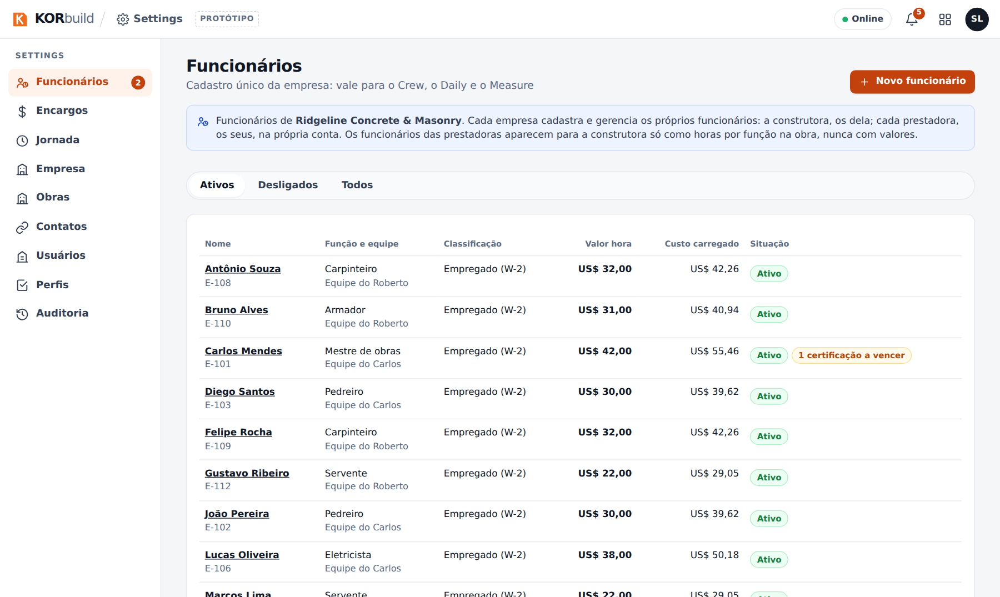
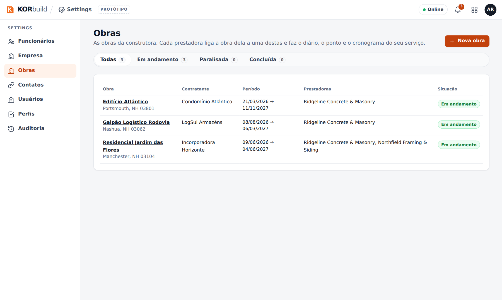

O Settings é onde cada empresa configura o KORbuild uma vez, para todos os módulos: o cadastro da empresa, as pessoas (funcionários e usuários), o que cada perfil pode fazer, as obras e seus cronogramas, os contatos e — para as empresas que batem o ponto das equipes — os encargos e as regras de jornada. Nada que a empresa possa querer mudar fica fixo no código.
O Settings vem com todo plano, sem custo a mais. Cada empresa tem o seu Settings e nunca vê o de outra (veja Como o KORbuild se organiza).
Por que importa
- Cadastra uma vez, usa em tudo. Obras, funcionários e contatos são os mesmos no Daily, no Crew e no Measure. A localização da obra define a cerca do ponto e o clima do diário; o valor hora do funcionário define o custo da obra.
- Nada reescreve o passado. Valor hora, encargos e regras de jornada mudam a partir de uma data. Semanas aprovadas e custos passados ficam exatamente como estavam.
- Toda mudança tem autor. A auditoria registra quem mudou o quê, quando, antes e depois, e por quê.
- O acesso é a empresa que decide. Os perfis são uma matriz de permissões que a empresa ajusta — inclusive uma permissão separada para ver valores em dinheiro.
O que tem no Settings
| Seção | O que guarda | Quem tem |
|---|---|---|
| Funcionários | As pessoas que trabalham nas obras: ofício, equipe, W-2 ou 1099, FLSA, data de admissão, certificações e histórico do valor hora. Empresa (empregador) mostra a conta a que pertencem. | Toda empresa (os funcionários de uma construtora são a equipe de gestão dela) |
| Encargos | Impostos e benefícios sobre a folha (FICA, FUTA, SUTA, workers' comp, benefícios), com vigência. | Empresas com o Crew |
| Jornada | Horas extras (semanais, diárias, dobradas) e intervalos, com vigência e modelos por estado. | Empresas com o Crew |
| Empresa | Logo, razão social, EIN, endereço, licenças e seguros, condições padrão da proposta. | Toda empresa |
| Obras | Cada obra: cliente e dono, endereço e cerca, datas, quem preenche o diário, dias de trabalho, situação. Modelos de etapas para os cronogramas. | Toda empresa |
| Contatos | Um só cadastro das empresas e pessoas de fora: construtoras, clientes, fornecedores, subempreiteiros. | Toda empresa |
| Usuários | Quem entra no sistema, com qual perfil, ligado a um cadastro de funcionário. | Toda empresa |
| Perfis | A matriz de permissões: o que cada perfil pode fazer em cada módulo. | Toda empresa |
| Auditoria | Toda mudança no Settings, com antes e depois. | Toda empresa |
O cronograma da obra fica em cada obra (Daily › Obras › uma obra › Abrir cronograma); ele é descrito aqui junto com as obras.

Quem usa
| Quem | O que faz |
|---|---|
| Administrador (gerente de escritório, dono) | Tudo no Settings. |
| Gestor de obras | Por padrão, só Obras (cadastrar e editar obras) — para salários e acessos ficarem com o administrador. |
| Encarregado, trabalhador | Não abrem o Settings. |
O que cada perfil pode fazer é ajustável: veja Perfis e permissões.
Para a construtora
A construtora gerencia as obras e não bate o ponto de ninguém (veja Como o KORbuild se organiza). O Settings dela é mais leve: sem encargos nem regras de jornada, e as obras dela não têm responsável pelo diário nem cronograma — esses ficam na obra de cada prestadora ligada a ela. A lista de obras mostra as prestadoras que trabalham em cada uma.
